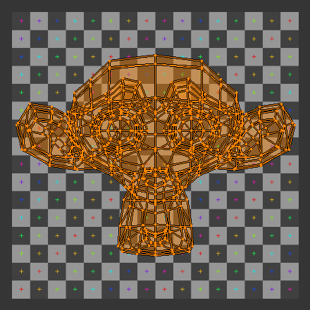
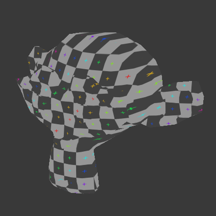

Applying Textures¶
Sooner or later, you may want to use an image texture on your model. If you are using an external application, you need to know where on the mesh you are painting. You may also need to test your UV mapping with a test image. This section covers how to export an outline of your UV map, and how to load images into the UV/Image editor.
Applying Textures to UVs¶
The UV/Image Editor allows you to map textures directly to the mesh faces. The 3D View editor shows you the object being textured. If you set this editor into Textured viewport shading, you will immediately see any changes made in the UV/Image and this editor, and vice versa.
You can edit and load images, and even play a game in the Blender Game Engine with UV textures for characters and object, without a material, and still see them in the 3D View. This is because no real rendering is taking place; it is all just viewport shading. If you were to apply an image to UVs then render, the texture would not show up by default.
To render an image however, you must:
- Create a Material for the object, and
- tell Blender to use the UV Textures on faces when rendering.
To create a Material, you have to click Add New Material in the Shading context.
There are two ways to tell Blender to use the UV Texture when rendering: the Proper way and the Quick Way:
Use UV Coordinates¶

A texture setup to map using its UV coordinates.
In the Texture channel panel, Add a New Texture and define the texture as an image and load the image you want to use. In the Mapping section, choose UV from the Coordinates menu, and select the UV layer to use.
Make sure it is mapped to Color in the Influence section as well (it will be mapped to Color by default, and the UV Texture is named “UVTex” by default). If the image has an alpha channel and you want to use it, click “Use Alpha” in the Map Image panel.
Full details of using Image textures are on the Image Textures page.
注解
Material is Required for Rendering
You can perform UV Texturing on a mesh within Blender without assigning a material, and you will even see it in your 3D View in textured viewport mode. However, when you render, you will just get a default gray if the object does not have a Material assigned. You will get a black if you do not load an image. If you do not create a texture that uses the image, or enable Face Texture, your object will render according to the procedural material settings.
Face Textures¶
The Material panel with activated Face Textures button.
An alternate way is to set up a Face Textures Material as shown. To do so,
with the Properties editor displayed, press F5 to display the Shader Buttons.
In the Properties editor, Material settings, click Add New material.
On the Options panel, enable Face Textures. This way is quick, but bypasses the normal rendering system for fast results, but results which do not respect transparency and proper shading.
Using the Test Grid¶
If your image is a base uniform pattern and you want the application of that image to your model to look like cloth, you do not want any stretching (unless you want the cloth to look like spandex).

The test grid applied to the UVs. |

A preview of the texture on the geometry. |
{kind=link}
{kind=link}
When you render, the mesh will have the test grid as its colors, and the UV Texture will be the size image you specified.
Modifying your Image Texture¶
The advantage to saving as a separate file is that you can easily switch textures just by copying other image files over it, and you can use external editing programs to work on it. The advantage of packing is that your whole project is kept in the blend-file, and that you only have to manage one file.